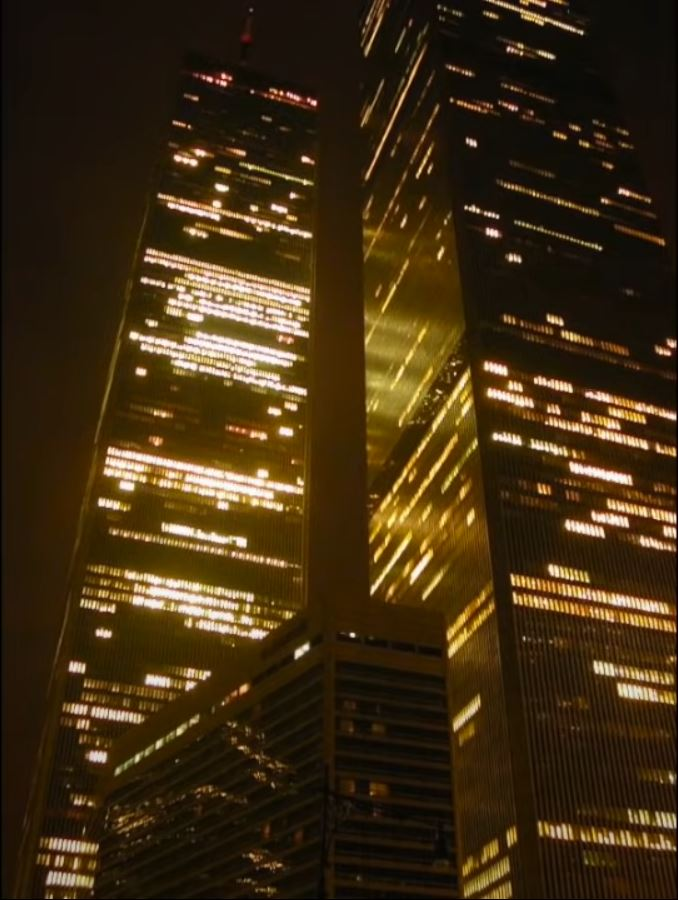

Cars
Since the arcade game, Out Run, released in the 80s is one of the largest pieces of inspiration for the Retrowave genre as a whole and is a racing game, of course cars are going to be a huge part of the iconography. In many Synthwave album covers, cars are one of the most common focal points. Usually sports cars from the 80s and some 90s are used as the standard stereotype you would see in much of the Retrowave and Synthwave art pieces. The car pictured below is clearly not a sports car but it was just something at work that I saw with no other cars around it.

The Grid
The classic grid originated from early CGI from live action films of the 80s such as Tron. Just like cars, grids and neon colors are some of the signiture looks of the Retrowave genre as a whole. An iconic look at what a "future-past" could have looked like. The grid symbolizes something that the generation that grew up in the those times were promised, a futuristic, technology based utopia. This is similar to how the Frutiger Aero aethetic was promised to my generation, a perfect balance between clean urban cities with pure nature surrounding us.

Vapor Tinted Glasses
While still related, the Vaporwave subgenre is a little different. In most cases, Vaporwave is brighter and full of pastel colors. There are many more things that can be viewed as Vaporwave too. A large portion of Vaporwave imagery utilizes popculture references and advertisements and also incorporates many more time periods; even being from present day. Some of the most iconic iconicongraphy comes from malls of the 80s and corporate business culture from the same era. A time period where computers were just starting to get into people's households and advertising was easier and more accessible to everyone than ever. However, if done correctly and following the design principles of Vaporwave, almost anything can be included as an icon. Finally, the music of Vaporwave usually includes remixes of samples of songs but can also be original compositions. Usually the music is meant to illicit the feeling nostalgia, even to experiences you have never had.
